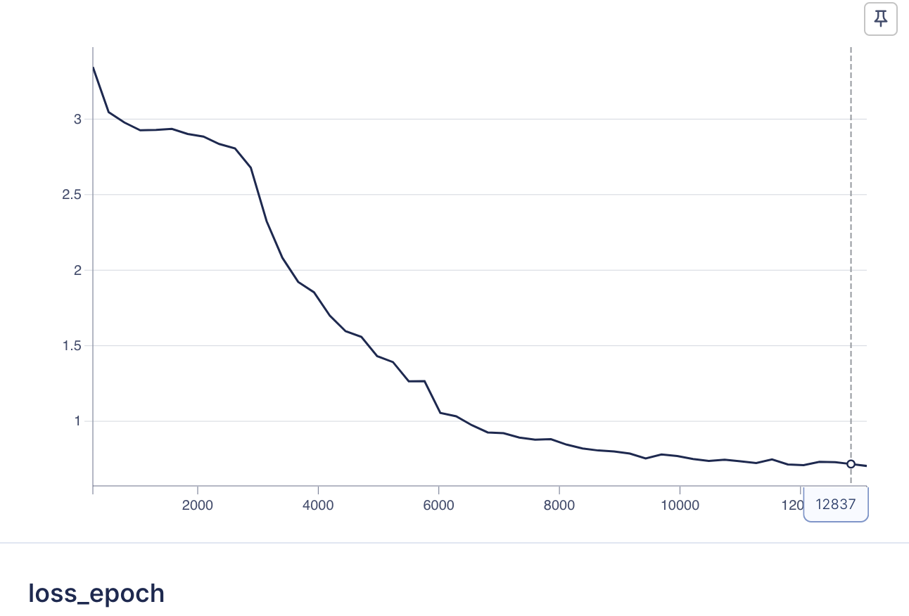
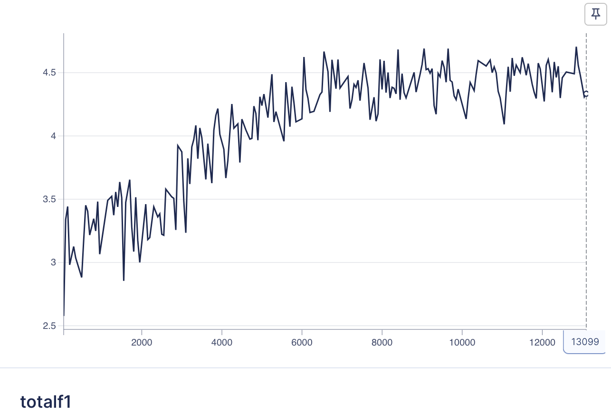
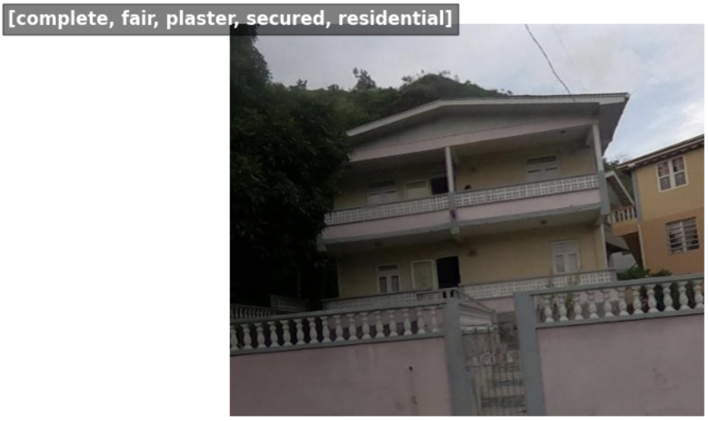
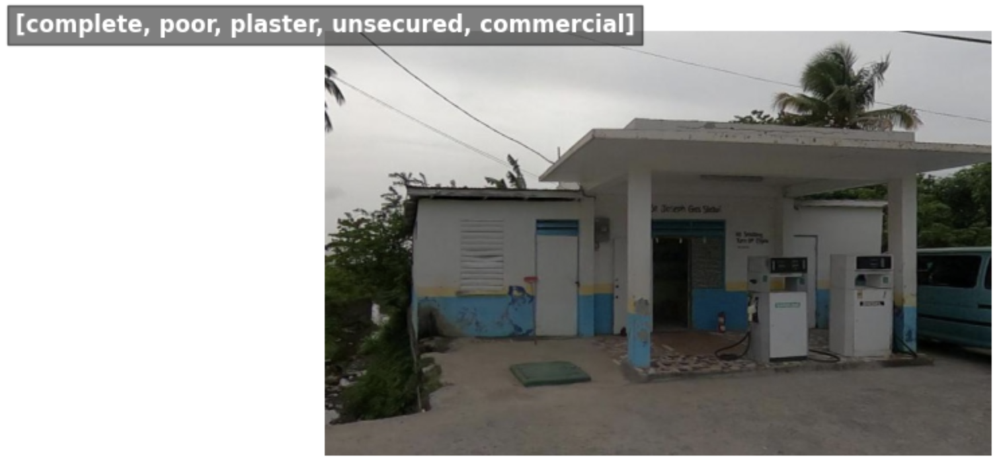
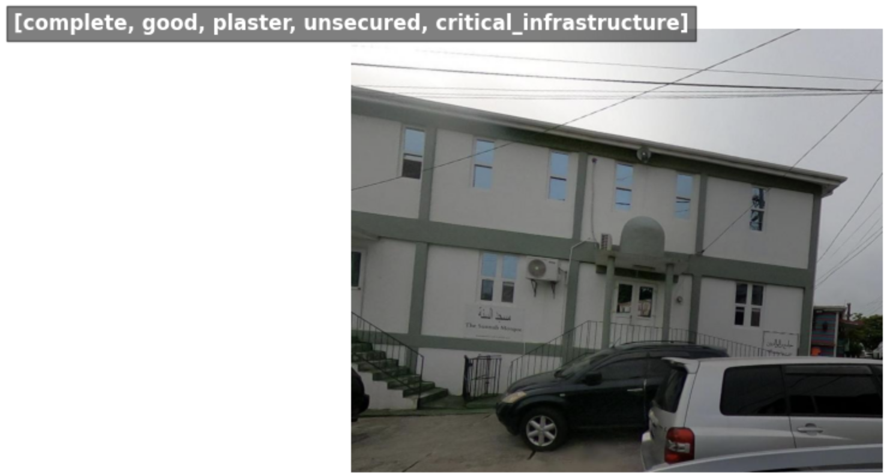
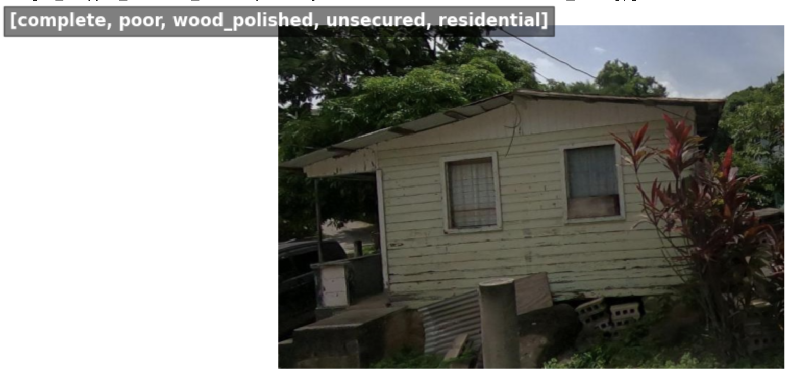
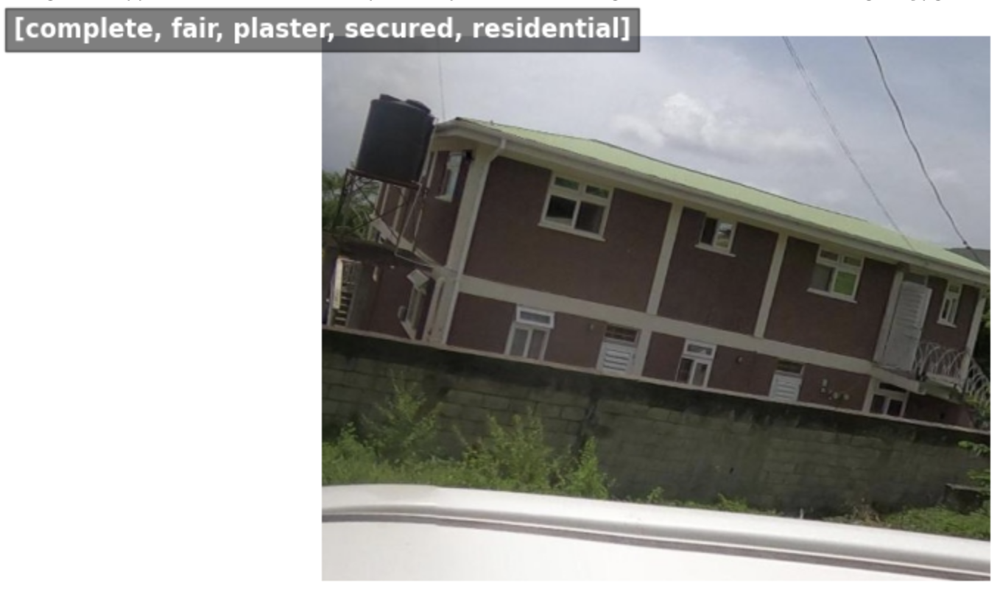
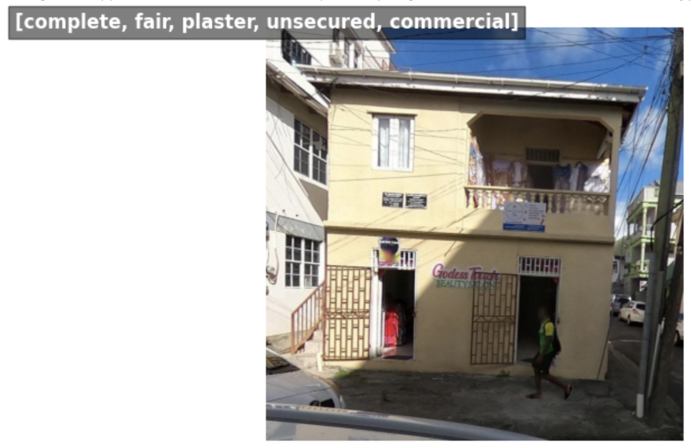

Classifier Training#
For classification, we’ve implemented the tiny variant of the ConvNeXtV2 architecture with a few tweaks.
ConvNexT V2 Tiny#
ConvNexT V2 Tiny is a fully convolutional neural network architecture designed for efficient image classification tasks. Here are the key points to understand about ConvNexT V2 Tiny:
Architecture: ConvNexT V2 Tiny is a variant of the ConvNexT architecture, which is known for its efficient and effective design. It consists of a series of convolutional layers organized in a hierarchical structure with cross-stage feature aggregation (CSFA) modules combined with a masked auto-encoder. The masked auto-encoder enables the benefits of self-supervised learning.
Efficiency: ConvNexT V2 Tiny is designed to be lightweight and computationally efficient, making it suitable for deployment on resource-constrained devices such as mobile phones or edge devices.
Drop Path Regularization: The architecture includes drop path regularization, which randomly drops connections between layers during training to prevent overfitting and improve generalization performance.
Pretraining: ConvNexT V2 Tiny models are often pretrained on large-scale image datasets such as ImageNet to learn generic features before being fine-tuned on specific tasks.
Usage: ConvNexT V2 Tiny models can be used for various computer vision tasks, including image classification, object detection, and semantic segmentation. They provide a balance between model complexity and performance, making them suitable for real-world applications where computational resources are limited.
Overall, ConvNexT V2 Tiny offers a lightweight and efficient solution for image classification tasks, making it a popular choice for applications where model size and computational efficiency are critical considerations.
We’ve implemented this architecture for training a classifier model to predict building properties using PyTorch Lightning. It leverages the AIM (AI Model Tracking) platform for experiment logging and monitoring.
Main classifier components#
The classifier_train.py script defines a PyTorch Lightning module called HPClassifier, which serves as a neural network model for a multi-class classification task.
Model Architecture:
The
HPClassifierclass inherits fromLightningModuleand defines the neural network architecture.The backbone of the model is based on the “convnextv2_tiny” architecture from the Timm library, which is pretrained and includes drop path regularization.
Separate classifier heads are defined for each building property (e.g., completeness, condition, material, security, use) using the
NormMlpClassifierHeadlayer from Timm.Each classifier head predicts the corresponding property using the backbone features.
Metrics:
F1 Score: F1 score metrics are computed for each property using the
torchmetrics.F1Scoreclass.
Optimizer and Scheduler:
AdamW optimizer with a configurable learning rate (
lr) is used. The base learning rate is set to 0.001.A MultiStepLR scheduler is employed to adjust the learning rate at predefined epochs.
Loss Functions:
Cross-entropy loss is used for each property prediction with class weights to handle class imbalance (see more on this below).
Focal loss is commented out but can be used as an alternative loss function.
Training, Validation, and Testing Steps:
training_step,validation_step, andtest_stepmethods define the forward pass and loss computation for training, validation, and testing phases, respectively.Losses and metrics are logged for monitoring the training progress using PyTorch Lightning logging utilities.
Hyperparameters:
Hyperparameters such as learning rate (
lr) and the number of classes for each building property are configurable during model initialization. A maximum of 50 epochs was allowed for.
Class imbalance#
The following entails the relative percentages of class-wise representation in the dataset.
complete
complete 83.713137
incomplete 16.286863
condition
fair 62.441354
poor 29.733579
good 7.825067
material
plaster 63.505362
mix-other-unclear 23.927614
brick_or_cement-concrete_block 5.981903
wood_polished 4.205764
corrugated_metal 1.105898
stone_with_mud-ashlar_with_lime_or_cement 0.561327
wood_crude-plank 0.435657
container-trailer 0.276475
security
unsecured 74.857574
secured 25.142426
use
residential 85.547922
commercial 6.719169
mixed 6.710791
critical_infrastructure 1.022118
We weight the losses per class as following:
complete
complete = 0.16
incomplete = 0.84
condition
poor = 0.19
fair = 0.09
good = 0.72
material
mix-other-unclear = 0.0046
plaster = 0.0017
brick_or_cement-concrete_block = 0.018
wood_polished = 0.026
stone_with_mud-ashlar_with_lime_or_cement = 0.196
corrugated_metal = 0.099
wood_crude-plank = 0.25
container-trailer = 0.39
security
secured = 0.75
unsecured = 0.25
use
residential = 0.009
critical_infrastructure = 0.759
mixed = 0.115
commercial = 0.115
In doing so, we can force the model to learn from errors tied to the rare classes more than the popular classes.
Usage#
Environment set-up#
To train the models in this project, a g5.2xlarge (single NVIDIA A10G Tensor Core GPU) machine based on the Deep Learning OSS Nvidia Driver AMI GPU PyTorch 2.1.0 (Ubuntu 20.04) 20240116 AMI was set up. See more on this AMI at: https://docs.aws.amazon.com/dlami/latest/devguide/appendix-ami-release-notes.html. It is recommended to set up a machine with a similar runtime.
If you haven’t done so already (for the detection training), from your local machine or virtual machine equipped with a GPU, run the following (requires a mamba installation):
mamba env create --file environment.yml
python -m pip install 'git+https://github.com/facebookresearch/detectron2.git'
You should now have an environment called hp that has everything installed. Make sure you have a GPU available with versions compatible with the following:
nvcc: NVIDIA (R) Cuda compiler driver
Copyright (c) 2005-2023 NVIDIA Corporation
Built on Mon_Apr__3_17:16:06_PDT_2023
Cuda compilation tools, release 12.1, V12.1.105
Build cuda_12.1.r12.1/compiler.32688072_0
torch: 2.1 ; cuda: cu121
Prepare the data#
Before training, run prep_classifier_training_data.py for both the left and right side annotation JSON files. This script take the annotations, clips the streetview images by the bounding boxes buffered with 100 pixels on each side (as dimensions and box placement permit) and writes the classes and filenames to a CSV file that will be used in the next step of the classification preparation. We tested a few different buffer sizes for clipping, and found that 100 pixels provides the best balance of focus to the subject building and beneficial surrounding context. Also, if you’re wondering why we are clipping the images by the boxes before classification, it is because some streetview images have more than one building and therefore more than one annotation associated with them.
You can find the data we’ve already processed here: s3://hp-deliverables-v2/classifier_data/final/
Command-Line Arguments: Specify the following command-line arguments:
IMG_DIR: Directory containing the dataset images.ANN_JSON: The left or right side annotation JSON file.SIDE: The side, “left” or “right”OUT_DIR: Directory to write the “ground-truth-box-clipped-and-buffered” images to, along with the csv file containing annotations.
Execute the script using the command:
python classifier_train.py <IMG_DIR> <ANN_JSON> <SIDE> <OUT_DIR>Merge the left and right side csv files and add weights column:
import pandas as pd
df_right = pd.read_csv("/home/ubuntu/data/cumulative_annos_right.csv")
df_left = pd.read_csv("/home/ubuntu/data/cumulative_annos_left.csv")
df_combined = pd.concat([df_right, df_left], ignore_index=True)
df_combined["file_name_original"] = df_combined["file_name"]
df_combined["file_name"] = df_combined["image_name_clip"]
prefix_to_add = "" # Whatever the out_dir was e.g. "clipped_images/"
df_combined['file_name'] = prefix_to_add + df_combined['file_name']
df_combined["weights"] = 1
df_combined.to_csv("data/raw/data_fixed.csv")
Now for training#
The script can be executed directly, taking command-line arguments for specifying experiment name, image directory, and data directory. It is designed to support a modular and configurable implementation of a neural network model for multi-class building property classification tasks, utilizing pre-trained backbone architectures and PyTorch Lightning for training and evaluation.
Script Workflow#
Set seed for reproducibility using Lightning.
Initialize an AIM logger for experiment tracking.
Call our
HouseDataModuleobject for data loading and preprocessing.Instantiate the
HPClassifiermodel.Define callback functions:
LearningRateMonitor: Monitors and logs the learning rate during training.ModelCheckpoint: Saves the best model based on validation performance.BackboneFreezeUnfreeze: Unfreezes the model backbone after a certain epoch.
Initialize the Lightning Trainer with required configurations:
devices: Automatic device selection.accelerator: Automatic accelerator selection.max_epochs: Maximum number of training epochs.precision: Mixed-precision training for improved efficiency.logger: AIM logger for experiment tracking.callbacks: List of callback functions.
Train the model using the
fitmethod with training and validation data loaders.We unfreeze the backbone architecture after 10 epochs.
Here are the final model’s loss curve and F1 score curve:  
How to run training#
To run the script, follow these steps:
Command-Line Arguments: Specify the following command-line arguments:
EXPERIMENT_NAME: Name of the training experiment.IMG_DIR: Directory containing the dataset images.DATA_DIR: Directory containing partitioned CSV files for the dataset.
Run Script: Execute the script using the command:
python classifier_train.py <EXPERIMENT_NAME> <IMG_DIR> <DATA_DIR>
Replace <EXPERIMENT_NAME>, <IMG_DIR>, and <DATA_DIR> with the appropriate values.
Visual display of training data#
These are images clipped and buffered by the ground truth bounding box. The property labels are indicated in the caption.
     